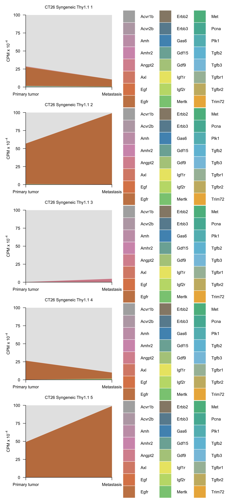

Last updated: 2025-06-18
Checks: 7 0
Knit directory: saini-stealTHY/
This reproducible R Markdown analysis was created with workflowr (version 1.7.1). The Checks tab describes the reproducibility checks that were applied when the results were created. The Past versions tab lists the development history.
Great! Since the R Markdown file has been committed to the Git repository, you know the exact version of the code that produced these results.
Great job! The global environment was empty. Objects defined in the global environment can affect the analysis in your R Markdown file in unknown ways. For reproduciblity it’s best to always run the code in an empty environment.
The command set.seed(20240517) was run prior to running
the code in the R Markdown file. Setting a seed ensures that any results
that rely on randomness, e.g. subsampling or permutations, are
reproducible.
Great job! Recording the operating system, R version, and package versions is critical for reproducibility.
Nice! There were no cached chunks for this analysis, so you can be confident that you successfully produced the results during this run.
Great job! Using relative paths to the files within your workflowr project makes it easier to run your code on other machines.
Great! You are using Git for version control. Tracking code development and connecting the code version to the results is critical for reproducibility.
The results in this page were generated with repository version e44ea0a. See the Past versions tab to see a history of the changes made to the R Markdown and HTML files.
Note that you need to be careful to ensure that all relevant files for
the analysis have been committed to Git prior to generating the results
(you can use wflow_publish or
wflow_git_commit). workflowr only checks the R Markdown
file, but you know if there are other scripts or data files that it
depends on. Below is the status of the Git repository when the results
were generated:
Ignored files:
Ignored: .DS_Store
Ignored: .Rhistory
Ignored: .Rproj.user/
Ignored: code/raw_data_processing/rnaseq/p27851_o32062/pipelines/
Ignored: configuration/.DS_Store
Ignored: data/crispr/
Ignored: data/resources/
Ignored: data/rnaseq/
Ignored: output/crispr/
Ignored: output/rnaseq/
Unstaged changes:
Modified: .gitignore
Modified: update_workflowr.R
Note that any generated files, e.g. HTML, png, CSS, etc., are not included in this status report because it is ok for generated content to have uncommitted changes.
These are the previous versions of the repository in which changes were
made to the R Markdown
(analysis/crispr-mm_2215_sgRNA-r2oC.Rmd) and HTML
(docs/crispr-mm_2215_sgRNA-r2oC.html) files. If you’ve
configured a remote Git repository (see ?wflow_git_remote),
click on the hyperlinks in the table below to view the files as they
were in that past version.
| File | Version | Author | Date | Message |
|---|---|---|---|---|
| Rmd | e44ea0a | Francesc Castro-Giner | 2025-06-18 | revert changes to Mueller plots |
| html | 869f9dd | Francesc Castro-Giner | 2025-05-13 | Build site. |
| Rmd | fa3898f | Francesc Castro-Giner | 2025-05-12 | updated revisions |
| Rmd | 114a040 | Francesc Castro-Giner | 2025-05-08 | update clonality figures |
| Rmd | 382cde0 | Francesc Castro-Giner | 2025-05-07 | update clonality figures |
| Rmd | c2a5c1c | Francesc Castro-Giner | 2025-05-06 | update r1od |
| Rmd | 56163b8 | Francesc Castro-Giner | 2025-04-30 | add r2oC |
Setup environment
knitr::opts_chunk$set(results='asis', echo=TRUE, message=FALSE, warning=FALSE, error=FALSE, fig.align = 'center', fig.width = 3.5, fig.asp = 0.618, dpi = 600, dev = c("png", "pdf"), fig.showtext = FALSE, engine.opts = list(bash = "-l"))
options(stringsAsFactors = FALSE)
use_seed <- 1100101
set.seed(use_seed)
# dir.create(params$output_dir, recursive = TRUE, showWarnings = FALSE)Load packages
library(tidyverse)
library(knitr)
library(foreach)
library(magrittr)
library(DT)
library(kableExtra)
library(diptest)
library(SummarizedExperiment)
library(openxlsx)
library(ggridges)
library(ggh4x)
library(patchwork)
library(colorblindr)
library(ggbeeswarm)
library(ggpubr)
library(MAGeCKFlute)Load ggplot theme
source("./configuration/rmarkdown/ggplot_theme.R")Load ggplot theme
source("./configuration/rmarkdown/color_palettes.R")Load Summarized Experiment object
se <- readRDS(file.path(params$data_dir, 'se.rds'))Filter samples used for this analysis
use_cols <- colData(se) %>%
data.frame %>%
rownames
se <- se[,use_cols]Data wrangling
chunk_colData <- colData(se) %>% data.frame %>%
mutate(
vector_short = ifelse(vector_short == 'Puro_EF1alpha_SpCas9',
'Cas9+Puro', vector_short),
vector_short = ifelse(vector_short == 'Puro+ dCas9',
'Cas9+Puro', vector_short),
vector_short = factor(vector_short, levels = c('Thy1', 'Puro', 'Cas9+Puro')),
mouse_model_short = case_match(mouse_model_global,
'immunodeficient' ~ 'NSG',
'immunocompetent' ~ 'Syngeneic',
'C57BL6' ~ 'Syngeneic'
),
mouse_model_short = factor(mouse_model_short, levels = c('NSG', 'Syngeneic')),
vector_mhost = paste0(vector_short, ', ', mouse_model_short),
model_vector_mhost = paste0(donor,', ', vector_short, ', ', mouse_model_short),
sample_type = ifelse(cancer_type %in% c('Breast', 'CRC'),
case_match(sample_type,
'whole_tumor' ~ 'Primary tumor',
'whole_lung' ~ 'Lung mets',
'bulk' ~ 'Bulk',
'cell_culture' ~ 'Cell culture'),
sample_type
),
sample_type = ifelse(cancer_type %in% c('NSCLC'),
case_match(sample_type,
'met_liver' ~ 'Liver mets',
'whole_lung' ~ 'Primary tumor',
'bulk' ~ 'Bulk',
'cell_culture' ~ 'Cell culture'),
sample_type
),
sample_type = factor(sample_type, levels = c('Primary tumor', 'Lung mets', 'Liver mets', 'Bulk', 'Cell culture'))
)
colData(se) <- chunk_colData %>% DataFrameList of comparisons for differential abundance using MAGeCK, using Mets over Primary tumor
x <- colData(se) %>% data.frame
mageck_comp_list <- list(
`StealTHY KO Syngeneic CMT167` = list(
`Liver mets` = x %>% filter(vector_mmodel == 'CMT167-KO-Thy1-C57BL6' & sample_type == 'Liver mets' ) %>% pull(sample_alias),
`Primary tumor` = x %>% filter(vector_mmodel == 'CMT167-KO-Thy1-C57BL6' & sample_type == 'Primary tumor' ) %>% pull(sample_alias)
),
`StealTHY KO Syngeneic LLC1` = list(
`Liver mets` = x %>% filter(vector_mmodel == 'LLC1-KO-Thy1-C57BL6' & sample_type == 'Liver mets' ) %>% pull(sample_alias),
`Primary tumor` = x %>% filter(vector_mmodel == 'LLC1-KO-Thy1-C57BL6' & sample_type == 'Primary tumor' ) %>% pull(sample_alias)
),
`StealTHY KO Syngeneic CT26` = list(
`Liver mets` = x %>% filter(vector_mmodel == 'CT26-KO-Thy1-BALB' & sample_type == 'Lung mets' ) %>% pull(sample_alias),
`Primary tumor` = x %>% filter(vector_mmodel == 'CT26-KO-Thy1-BALB' & sample_type == 'Primary tumor' ) %>% pull(sample_alias)
)
)
mageck_comp_list_names <- names(mageck_comp_list)
names(mageck_comp_list_names) <- names(mageck_comp_list) %>% gsub(" ", "_",.) %>% tolowerdata_comp <- foreach(i = names(mageck_comp_list), .combine = rbind) %do% {
c(
Comparison = i,
Case = paste(mageck_comp_list[[i]][[1]], collapse = " "),
Control = paste(mageck_comp_list[[i]][[2]], collapse = " ")
)
}
data_comp %>%
datatable(.,
rownames = FALSE,
filter = 'top',
caption = 'List of comparisons for MAGeCK analysis',
extensions = 'Buttons',
options = list(
dom = 'Blfrtip',
buttons = c('csv', 'excel'),
columnDefs = list(
list(width = 120, targets = 1:2)
)
)
)Generate MAGeCK test scripts. To generate the script files change
eval = FALSE to eval = TRUE in the chunk
options.
The scripts must be run in the terminal, inside the path . The script will activate the mageck environment and run the test for each comparison. The results will be saved in the same directory.
chunk_se <- se
out_dir <- file.path(params$output_dir, params$mageck_dir)
dir.create(out_dir, recursive = TRUE, showWarnings = FALSE)
# Generate count matrix
count_mat <- assay(chunk_se, 'counts') %>% data.frame(check.names = FALSE) %>%
rownames_to_column('sgRNA') %>%
mutate(Gene = rowData(chunk_se)$Gene) %>%
dplyr::select(sgRNA, Gene, everything())
write_tsv(count_mat, file = file.path(out_dir, 'counts.txt'))
# Generate list of control sgRNA IDs
non_target_list <- rownames(chunk_se) %>% grep('Non_Target', ., value = T) %>% data.frame
write_tsv(non_target_list, file = file.path(out_dir, 'control_sgrna.txt'), col_names = F)
# Generate mageck commands
res_cmd <- data.frame('source activate mageckenv')
res_cmd <- foreach(i=names(mageck_comp_list), .combine = rbind) %do% {
paste('mageck test -k counts.txt --control-sgrna control_sgrna.txt --norm-method control -t', paste(mageck_comp_list[[i]][[1]], collapse = ','),'-c', paste(mageck_comp_list[[i]][[2]], collapse = ','), '-n', tolower(gsub(" ", "_", i)), '\n')
} %>% data.frame()
res_cmd <- rbind('conda activate mageckenv', res_cmd, 'conda deactivate')
write_tsv(res_cmd, file.path(out_dir, 'run_mageck_test.sh'), col_names = FALSE)gene_summ_files <- list.files(path = file.path(params$output_dir, params$mageck_dir), pattern = 'gene_summary.txt', full.names = TRUE)
analysis_prefix <- basename(gene_summ_files) %>% gsub(".gene_summary.txt", "", .)
gene_summ <- foreach(i = gene_summ_files) %do% read.delim(i, check.names = FALSE)
names(gene_summ) <- analysis_prefix
sgrna_summ_files <- list.files(path = file.path(params$output_dir, params$mageck_dir), pattern = 'sgrna_summary.txt', full.names = TRUE)
analysis_prefix <- basename(sgrna_summ_files) %>% gsub(".sgrna_summary.txt", "", .)
sgrna_summ <- foreach(i = sgrna_summ_files) %do% read.delim(i, check.names = FALSE)
names(sgrna_summ) <- analysis_prefix
gene_summ_files <- list.files(path = file.path(params$output_dir, params$mageck_dir), pattern = 'gene_summary.txt', full.names = TRUE)
analysis_prefix <- basename(gene_summ_files) %>% gsub(".gene_summary.txt", "", .)
gene_summ <- foreach(i = gene_summ_files) %do% read.delim(i, check.names = FALSE)
names(gene_summ) <- analysis_prefix
gene_summ_files <- list.files(path = file.path('./output/crispr/mm_2215_sgRNA', 'mageck_rra_expr'), pattern = 'gene_summary.txt', full.names = TRUE)
analysis_prefix <- basename(gene_summ_files) %>% gsub(".gene_summary.txt", "", .)
gene_summ_5C <- foreach(i = gene_summ_files) %do% read.delim(i, check.names = FALSE)
names(gene_summ_5C) <- analysis_prefix# File name gene summary
rmd_file <- current_input()
if(is.null(rmd_file))
rmd_file <- 'tmp'
gene_file_xlsx <- file.path('./docs/file',rmd_file, 'mageck_gene_summary.xlsx')
sgrna_file_xlsx <- file.path('./docs/file',rmd_file, 'mageck_sgrna_summary.xlsx')for(i in names(mageck_comp_list)) {
i <- tolower(i) %>% gsub(" ", "_",.)
file_xlsx <- file.path('./docs/file',rmd_file, paste0(i, '_mageck_results.xlsx'))
dir.create(dirname(file_xlsx), recursive = TRUE, showWarnings = FALSE)
# Generate workbook
wb <- createWorkbook()
wsn <- 'gene_summ'
addWorksheet(wb, wsn)
writeData(wb, wsn, gene_summ[[i]])
wsn <- 'sgrna_summ'
addWorksheet(wb, wsn)
# writeData(wb, wsn, sgrna_summ[[i]])
# for(wsn in names(mageck_flute[[i]])) {
# addWorksheet(wb, wsn)
# writeData(wb, wsn, mageck_flute[[i]][[wsn]])
# }
saveWorkbook(wb, file_xlsx, TRUE)
}# File name gene summary
file_xlsx <- gene_file_xlsx
dir.create(dirname(file_xlsx), recursive = TRUE, showWarnings = FALSE)
# Generate workbook
wb <- createWorkbook()
for(i in names(gene_summ)) {
addWorksheet(wb, i)
writeData(wb, i, gene_summ[[i]])
}
saveWorkbook(wb, file_xlsx, TRUE)
# File name sgRNA summary
file_xlsx <- sgrna_file_xlsx
dir.create(dirname(file_xlsx), recursive = TRUE, showWarnings = FALSE)
# Generate workbook
wb <- createWorkbook()
for(i in names(sgrna_summ)) {
addWorksheet(wb, i)
writeData(wb, i, sgrna_summ[[i]])
}
saveWorkbook(wb, file_xlsx, TRUE)The tables of results can be downloaded using the following links:
For file format description, visit MAGeCK output
Download the results by comparison, including gene-set analysis level:
x <- foreach(i=names(mageck_comp_list), .combine = c) %do% {
ilower <- tolower(i) %>% gsub(" ", "_",.)
file_xlsx <- file.path('./file', rmd_file, paste0(ilower, '_mageck_results.xlsx'))
paste0("[", i, "](", file_xlsx,")", sep = "")
}
cat(paste(x, collapse = ' - '), "\n\n")StealTHY KO Syngeneic CMT167 - StealTHY KO Syngeneic LLC1 - StealTHY KO Syngeneic CT26
gene_info <- readxl::read_xlsx('./data/resources/selected_gene_list/gene_list_for_figure_5c_additional_models.xlsx')
use_colors <- c(
`Immune system cytokines and chemokines` = 'grey',
`Immune system cytokines\nand chemokines` = 'grey',
`Interferone, TNF and danger/death-inducing signals` = 'black',
`Interferon, TNF\nand danger/death-inducing\nsignals` = 'black',
`Interferon, TNF and\ndanger/death-inducing\nsignals` = 'black',
`TGF-β family related` = 'red',
`RTK signaling` = 'blue',
`Positive controls` = 'black'
)
use_fill <- c(
`Immune system cytokines and chemokines` = 'grey',
`Immune system cytokines\nand chemokines` = 'grey',
`Interferone, TNF and danger/death-inducing signals` = 'black',
`Interferon, TNF\nand danger/death-inducing\nsignals` = 'black',
`Interferon, TNF and\ndanger/death-inducing\nsignals` = 'black',
`TGF-β family related` = 'red',
`RTK signaling` = 'blue',
`Positive controls` = 'white'
)
use_shape <- c(
`Immune system cytokines and chemokines` = 16,
`Immune system cytokines\nand chemokines` = 16,
`Interferone, TNF and danger/death-inducing signals` = 16,
`Interferon, TNF\nand danger/death-inducing\nsignals` = 16,
`Interferon, TNF and\ndanger/death-inducing\nsignals` = 16,
`TGF-β family related` = 16,
`RTK signaling` = 16,
`Positive controls` = 1
)
# get gene order based on Original figure
# gene_levels <- gene_summ_5C[['stealthy_ko_syngeneic']] %>%
# ReadRRA(score = 'lfc') %>%
# dplyr::rename(LFC = Score) %>%
# left_join(gene_info, by = c('id' = 'id')) %>%
# filter(!is.na(gene_set)) %>%
# mutate(gene_name = fct_reorder(gene_name, LFC, .desc = FALSE)) %>%
# pull(gene_name) %>%
# levels
gene_levels <- rev(gene_info$id)
gene_levels_list <- list()
gene_levels_list[['stealthy_ko_syngeneic_llc1']] <- c(
"Pcna",
# "Tgfb2","Gdf9","Amhr2","Tgfbr2","Gdf15","Tgfb3","Tgfbr1",
"Amh", "Amhr2", "Tgfbr2", "Acvr2b", "Gdf15", "Tgfb3", "Tgfbr1",
# "Met","Igf2r","Igf1r","Egfr","Axl","Gas6", "Erbb3","Erbb2","Egf",
"Mertk", "Igf2r", "Angpt2", "Igf1r", "Egfr", "Axl", "Gas6",
"Plk1","Trim72",
"Cd30","Ifnlr1","Ifnar1","Trail","Ifne","Lta","Ltbr","Tnfr2","Light",
"Ccl25","Cxcl9","Ccrl2","Cxcr5","Ccr6","Ccr4","Relt", "Il18ra1", "Il13ra2", "Il13ra1", "Il18","Cxcl4","Ccl4","Cxcl14"
)
gene_levels_list[['stealthy_ko_syngeneic_ct26']] <- c(
"Pcna",
# "Amhr2","Gdf9","Tgfbr1","Tgfbr2","Tgfb2","Gdf15","Tgfb3",
'Amhr2', 'Amh', 'Gdf15', 'Tgfbr2', 'Gdf9', 'Acvr1b', 'Tgfbr1',
# "Met","Igf1r","Igf2r","Egfr","Axl","Erbb3","Erbb2","Egf","Gas6",
'Axl', 'Egfr', 'Erbb3', 'Igf2r', 'Mertk', 'Gas6', 'Met',
"Plk1","Trim72",
"Cd30","Ifnlr1","Ifnar1","Trail","Ifne","Lta","Ltbr","Tnfr2","Light",
"Ccl25","Cxcl9","Ccrl2","Cxcr5","Ccr6","Ccr4","Relt", "Il18ra1", "Il13ra2", "Il13ra1", "Il18","Cxcl4","Ccl4","Cxcl14"
)
gene_levels_list[['stealthy_ko_syngeneic_cmt167']] <- c(
"Pcna",
# "Amhr2","Gdf9","Tgfbr2","Tgfbr1","Tgfb2","Gdf15","Tgfb3",
'Amhr2', 'Amh', 'Gdf9', 'Acvr1b', 'Acvr1', 'Tgfbr2', 'Tgfbr1',
# "Met","Igf1r","Igf2r","Egfr","Axl","Erbb3","Erbb2","Egf","Gas6",
'Met', 'Igf1r', 'Igf2r', 'Egfr', 'Mertk', 'Axl', 'Angpt2',
"Plk1","Trim72",
"Cd30","Ifnlr1","Ifnar1","Trail","Ifne","Lta","Ltbr","Tnfr2","Light",
"Ccl25","Cxcl9","Ccrl2","Cxcr5","Ccr6","Ccr4","Relt", "Il18ra1", "Il13ra2", "Il13ra1", "Il18","Cxcl4","Ccl4","Cxcl14"
)Differential abundance of selected genes in carcinoma cells subjected to StealTHY KO or Cas9+Puro
use_comp <- names(gene_summ)
# FDR limits
xfdr <- foreach(i=gene_summ[use_comp], .combine = rbind) %do% {
i %>%
ReadRRA(score = 'lfc') %>%
dplyr::rename(LFC = Score) %>%
left_join(gene_info, by = c('id' = 'id')) %>%
filter(!is.na(gene_set)) %>%
pull(FDR) %>%
min
}
maxFDR <- -log10(xfdr[,1]) %>% max
# Set LFC (x-axis) for comparable plots to "stealthy_ko_syngeneic": "stealthy_ko_nsg"
# stealthy_comp <- c("stealthy_ko_syngeneic", "stealthy_ko_nsg")
# xlfc <- foreach(i=gene_summ_5C[stealthy_comp], .combine = rbind) %do% {
# i %>%
# ReadRRA(score = 'lfc') %>%
# dplyr::rename(LFC = Score) %>%
# left_join(gene_info, by = c('id' = 'id')) %>%
# filter(!is.na(gene_set)) %>%
# pull(LFC) %>%
# abs %>% max
# }
# stealthy_maxLFC <- max(xlfc[,1])
# stealthy_xlim <- c(-stealthy_maxLFC, stealthy_maxLFC)
# stealthy_breaks <- c(-2.5, -1, 0, 1, 2.5)
# stealthy_labels <- c('-2.5', '-1', '0', '1', '2.5')
xlfc <- foreach(i=gene_summ, .combine = rbind) %do% {
i %>%
ReadRRA(score = 'lfc') %>%
dplyr::rename(LFC = Score) %>%
left_join(gene_info, by = c('id' = 'id')) %>%
filter(!is.na(gene_set)) %>%
pull(LFC) %>%
abs %>% max
}
# maxLFC <- ceiling(max(xlfc[,1]))
# xlim <- c(-maxLFC, maxLFC)
# xbreaks <- c(-6, -2.5, 0, 2.5, 6)
# xlabels <- c('-6', '-2.5', '0', '2.5', '6')
i <- use_comp[1]
for(i in use_comp) {
cat("####", mageck_comp_list_names[i], "\n\n")
gene_levels <- gene_levels_list[[i]]
x <- gene_summ[[i]] %>%
ReadRRA(score = 'lfc') %>%
dplyr::rename(LFC = Score) %>%
left_join(gene_info, by = c('id' = 'id')) %>%
filter(!is.na(gene_set)) %>%
filter(gene_name %in% gene_levels) %>%
mutate(
gene_name = factor(gene_name, levels = gene_levels),
gene_set = ifelse(
gene_set == 'Immune system cytokines and chemokines',
'Immune system cytokines\nand chemokines',
gene_set
),
gene_set = ifelse(
gene_set == 'Interferone, TNF and danger/death-inducing signals',
'Interferon, TNF and\ndanger/death-inducing\nsignals',
gene_set
),
gene_set = factor(gene_set, names(use_colors))
)
xlim <- c(-ceiling(max(abs(x$LFC), na.rm = TRUE)),
ceiling(max(abs(x$LFC), na.rm = TRUE)))
# size_breaks <- c(0, 0.25, 0.5, 1, 2, ceiling(maxFDR))
size_breaks <- c(0, 0.25, 0.5, ceiling(maxFDR))
res <- x %>%
ggplot(aes(LFC, gene_name, color = gene_set, size = -log10(FDR))) +
geom_point(aes(shape = gene_set)) +
geom_vline(xintercept = 0, linetype = 3, linewidth = one_pt/2) +
scale_y_discrete(expand = expansion(add = c(1, 1))) + # add fixed units around each facet to avoid lines over points
# scale_x_continuous(
# expand = expansion(add = c(1, 1))
# ) + # add fixed units around each facet to avoid lines over points
scale_color_manual(values = use_colors) +
scale_size(range = c(0.5, 2.5),
limits = c(0, ceiling(maxFDR)),
breaks = size_breaks,
labels = size_breaks %>% as.character # remove trailing 0 from decimals
) +
scale_shape_manual(values = use_shape) +
scale_x_continuous(
expand = expansion(add = c(1, 1))
) +
facet_grid(rows = vars(gene_set), scales = 'free_y', space = 'free_y') +
theme_facet +
theme(
# axis.line = element_line(linewidth = one_pt/2, color = 'black'),
axis.ticks = element_line(linewidth = one_pt/2, color = 'black'),
panel.border = element_rect(linewidth = one_pt/2, color = 'black'),
axis.text = element_text(size=8),
axis.title = element_text(size = 8),
legend.title = element_text(size=8),
legend.text = element_text(size=8),
strip.text = element_text(size = 4)
) +
labs(
x = expression(paste("lo", g[2],"(Fold change)")),
y = NULL,
size = expression(paste("-lo", g[10],"(FDR)")),
title =
) +
guides(color = 'none', shape = 'none')
res <- res +
scale_x_continuous(
expand = expansion(add = c(1, 1)),
limits = xlim
# breaks = xbreaks,
# labels = xlabels
)
print(res)
cat('\n\n')
}Define selected comparisons for muller plots
x <- colData(se) %>% data.frame
mageck_comp_list <- list(
`StealTHY KO Syngeneic CMT167` = list(
`Primary tumor` = x %>% filter(vector_mmodel == 'CMT167-KO-Thy1-C57BL6' & sample_type == 'Primary tumor' ) %>% pull(sample_alias),
`Liver mets` = x %>% filter(vector_mmodel == 'CMT167-KO-Thy1-C57BL6' & sample_type == 'Liver mets' ) %>% pull(sample_alias)
),
`StealTHY KO Syngeneic LLC1` = list(
`Primary tumor` = x %>% filter(vector_mmodel == 'LLC1-KO-Thy1-C57BL6' & sample_type == 'Primary tumor' ) %>% pull(sample_alias),
`Liver mets` = x %>% filter(vector_mmodel == 'LLC1-KO-Thy1-C57BL6' & sample_type == 'Liver mets' ) %>% pull(sample_alias)
),
`StealTHY KO Syngeneic CT26` = list(
`Primary tumor` = x %>% filter(vector_mmodel == 'CT26-KO-Thy1-BALB' & sample_type == 'Primary tumor' ) %>% pull(sample_alias),
`Liver mets` = x %>% filter(vector_mmodel == 'CT26-KO-Thy1-BALB' & sample_type == 'Lung mets' ) %>% pull(sample_alias)
)
)
comp_list_muller <- list(
`Comparison 1` = list(
`CMT167 Syngeneic Thy1.1 1` = c('C167_StealTHY_Tum_1', 'C167_StealTHY_Met_1'),
`CMT167 Syngeneic Thy1.1 3` = c('C167_StealTHY_Tum_3', 'C167_StealTHY_Met_3'),
`CMT167 Syngeneic Thy1.1 4` = c('C167_StealTHY_Tum_4', 'C167_StealTHY_Met_4'),
`CMT167 Syngeneic Thy1.1 5` = c('C167_StealTHY_Tum_5', 'C167_StealTHY_Met_5')
),
`Comparison 2` = list(
`LLC1 Syngeneic Thy1.1 1` = c('LLC1_StealTHY_Tum_1', 'LLC1_StealTHY_Met_1'),
`LLC1 Syngeneic Thy1.1 2` = c('LLC1_StealTHY_Tum_2', 'LLC1_StealTHY_Met_2'),
`LLC1 Syngeneic Thy1.1 3` = c('LLC1_StealTHY_Tum_3', 'LLC1_StealTHY_Met_3'),
`LLC1 Syngeneic Thy1.1 4` = c('LLC1_StealTHY_Tum_4', 'LLC1_StealTHY_Met_4'),
`LLC1 Syngeneic Thy1.1 5` = c('LLC1_StealTHY_Tum_5', 'LLC1_StealTHY_Met_5')
),
`Comparison 3` = list(
`CT26 Syngeneic Thy1.1 1` = c('ColoCT26_StealTHY_Tum_1', 'ColoCT26_StealTHY_Met_1'),
`CT26 Syngeneic Thy1.1 2` = c('ColoCT26_StealTHY_Tum_2', 'ColoCT26_StealTHY_Met_2'),
`CT26 Syngeneic Thy1.1 3` = c('ColoCT26_StealTHY_Tum_3', 'Replacement_1'),
`CT26 Syngeneic Thy1.1 4` = c('Replacement_2', 'Replacement_3'),
`CT26 Syngeneic Thy1.1 5` = c('Replacement_4', 'Replacement_4bis')
)
)
genes_list_1 <- gene_info %>%
filter(gene_set %in% c("TGF-β family related", "RTK signaling", "Positive controls")) %>%
pull(id)
genes_list_2 <- gene_info %>%
filter(!gene_set %in% c("TGF-β family related", "RTK signaling", "Positive controls")) %>%
pull(id)Generate muller plots for genes in main figure 5C
cpm_threshold <- 10000
comp_list <- comp_list_muller
use_genes <- genes_list_1
# Create DF
use_df <- assay(se, 'cpm') %>% data.frame(check.names = FALSE) %>%
rownames_to_column('guide') %>%
mutate(
gene = rowData(se)$Gene,
gene = ifelse(grepl('Non_Target', gene), 'Non_Target', gene)
) %>%
filter(gene %in% use_genes) %>%
pivot_longer(-c(guide, gene), names_to = 'sample_alias', values_to = 'cpm')
j <- names(comp_list)[1]
muller_plots <- foreach(j = names(comp_list)) %do% {
i <- comp_list[[j]][[1]]
iname <- names(comp_list[[j]])[1]
res <- foreach(iname = names(comp_list[[j]])) %do% {
i <- comp_list[[j]][[iname]]
x <- use_df %>%
filter(sample_alias %in% i) %>%
mutate(
sample_type = ifelse(sample_alias == i[1], 'Primary tumor', 'Metastasis'),
sample_type = factor(sample_type, levels = c('Primary tumor', 'Metastasis'))
)
# Group CPM by gene
x %<>%
group_by(gene, sample_alias, sample_type) %>%
summarise(cpm = sum(cpm)) %>%
mutate(
gene = fct_reorder(gene, cpm)
)
# # Select guides with cpm > cpm_threshold
# x_guides_keep <- x %>%
# group_by(sample_type, guide) %>%
# summarise(cpm = max(cpm)) %>%
# filter(cpm > cpm_threshold) %>%
# pull(guide)
# # Group guides with cpm < cpm_threshold into the low abundant category, and sum counts for low abundant
# x %<>%
# mutate(
# guide = ifelse(guide %in% x_guides_keep, guide, 'low abundant')
# ) %>%
# group_by(sample_type, guide) %>%
# summarise(cpm = sum(cpm)) %>%
# ungroup() %>%
# mutate(
# guide = fct_reorder(guide, cpm),
# guide = relevel(guide, ref = 'low abundant')
# )
use_cols <- c(
'low abundant' = 'grey80',
colorRampPalette(rev(palette_OkabeIto))(nlevels(x$gene) - 1) %>% set_names(levels(x$gene)[-1])
)
x %>%
ggplot( aes(x = sample_type, y = cpm/10000, group = gene, fill = gene)) +
geom_area(colour = alpha("white", 0.1), linewidth = 0.08, alpha = 0.8) +
scale_fill_manual(values = use_cols, guide = guide_legend(ncol = 3)) +
labs(
x = '',
y = expression("CPM x 10"^-4),
title = iname,
fill = ''
) +
scale_x_discrete(expand = c(0, 0)) +
# scale_y_continuous(expand = c(0, 0), limits = c(0, 1000000/10000)) +
scale_y_continuous(expand = c(0, 0)) +
# guides(fill = 'none') +
theme(
panel.background = element_rect(fill = "grey90"),
# plot.margin = margin(0.5, 1.5, 0.5, 0, "cm"),
plot.margin = margin(0, 0.5, 0, 0, "cm"),
axis.text = element_text(size=3),
axis.title = element_text(size=3),
plot.title = element_text(size=3, hjust = 0.5),
legend.text = element_text(size=3)
)
}
names(res) <- names(comp_list[[j]])
return(res)
}
names(muller_plots) <- names(comp_list)
# muller_syngeneic_representative <- muller_plotsfor (i in names(muller_plots)) {
cat('###', i, '\n\n')
wrap_plots(muller_plots[[i]], ncol = 1) %>% print
cat('\n\n')
}
| Version | Author | Date |
|---|---|---|
| 869f9dd | Francesc Castro-Giner | 2025-05-13 |
sessionInfo()R version 4.4.3 (2025-02-28) Platform: aarch64-apple-darwin20 Running under: macOS Sequoia 15.5
Matrix products: default BLAS: /Library/Frameworks/R.framework/Versions/4.4-arm64/Resources/lib/libRblas.0.dylib LAPACK: /Library/Frameworks/R.framework/Versions/4.4-arm64/Resources/lib/libRlapack.dylib; LAPACK version 3.12.0
locale: [1] en_US.UTF-8/en_US.UTF-8/en_US.UTF-8/C/en_US.UTF-8/en_US.UTF-8
time zone: Europe/Zurich tzcode source: internal
attached base packages: [1] stats4 stats graphics grDevices utils
datasets methods
[8] base
other attached packages: [1] cowplot_1.1.3.9000
MAGeCKFlute_2.9.0
[3] ggpubr_0.6.0 ggbeeswarm_0.7.2
[5] colorblindr_0.1.0 colorspace_2.1-1
[7] patchwork_1.3.0 ggh4x_0.3.0
[9] ggridges_0.5.6 openxlsx_4.2.8
[11] SummarizedExperiment_1.36.0 Biobase_2.66.0
[13] GenomicRanges_1.58.0 GenomeInfoDb_1.42.3
[15] IRanges_2.40.1 S4Vectors_0.44.0
[17] BiocGenerics_0.52.0 MatrixGenerics_1.18.1
[19] matrixStats_1.5.0 diptest_0.77-1
[21] kableExtra_1.4.0 DT_0.33
[23] magrittr_2.0.3 foreach_1.5.2
[25] knitr_1.50 lubridate_1.9.4
[27] forcats_1.0.0 stringr_1.5.1
[29] dplyr_1.1.4 purrr_1.0.4
[31] readr_2.1.5 tidyr_1.3.1
[33] tibble_3.2.1 ggplot2_3.5.2
[35] tidyverse_2.0.0 workflowr_1.7.1
loaded via a namespace (and not attached): [1] splines_4.4.3
later_1.4.2 ggplotify_0.1.2
[4] bitops_1.0-9 filelock_1.0.3 cellranger_1.1.0
[7] R.oo_1.27.1 graph_1.84.1 XML_3.99-0.18
[10] lifecycle_1.0.4 httr2_1.1.2 rstatix_0.7.2
[13] rprojroot_2.0.4 processx_3.8.6 lattice_0.22-7
[16] crosstalk_1.2.1 backports_1.5.0 sass_0.4.10
[19] rmarkdown_2.29 jquerylib_0.1.4 yaml_2.3.10
[22] ggtangle_0.0.6 httpuv_1.6.16 zip_2.3.3
[25] depmap_1.20.0 DBI_1.2.3 RColorBrewer_1.1-3
[28] abind_1.4-8 zlibbioc_1.52.0 R.utils_2.13.0
[31] RCurl_1.98-1.17 yulab.utils_0.2.0 rappdirs_0.3.3
[34] git2r_0.36.2 GenomeInfoDbData_1.2.13 enrichplot_1.26.6
[37] ggrepel_0.9.6 tidytree_0.4.6 svglite_2.2.1
[40] codetools_0.2-20 DelayedArray_0.32.0 DOSE_4.0.1
[43] xml2_1.3.8 tidyselect_1.2.1 aplot_0.2.5
[46] UCSC.utils_1.2.0 farver_2.1.2 BiocFileCache_2.14.0
[49] pathview_1.46.0 jsonlite_2.0.0 Formula_1.2-5
[52] iterators_1.0.14 systemfonts_1.2.3 tools_4.4.3
[55] treeio_1.30.0 Rcpp_1.0.14 glue_1.8.0
[58] gridExtra_2.3 SparseArray_1.6.2 xfun_0.52
[61] qvalue_2.38.0 withr_3.0.2 BiocManager_1.30.25
[64] fastmap_1.2.0 callr_3.7.6 digest_0.6.37
[67] gridGraphics_0.5-1 timechange_0.3.0 R6_2.6.1
[70] textshaping_1.0.1 GO.db_3.20.0 dichromat_2.0-0.1
[73] RSQLite_2.3.11 R.methodsS3_1.8.2 generics_0.1.4
[76] data.table_1.17.2 httr_1.4.7 htmlwidgets_1.6.4
[79] S4Arrays_1.6.0 whisker_0.4.1 pkgconfig_2.0.3
[82] gtable_0.3.6 blob_1.2.4 XVector_0.46.0
[85] clusterProfiler_4.14.6 htmltools_0.5.8.1 carData_3.0-5
[88] fgsea_1.32.4 scales_1.4.0 png_0.1-8
[91] ggfun_0.1.8 rstudioapi_0.17.1 tzdb_0.5.0
[94] reshape2_1.4.4 nlme_3.1-168 curl_6.2.2
[97] org.Hs.eg.db_3.20.0 cachem_1.1.0 BiocVersion_3.20.0
[100] parallel_4.4.3 vipor_0.4.7 AnnotationDbi_1.68.0
[103] pillar_1.10.2 grid_4.4.3 vctrs_0.6.5
[106] promises_1.3.2 car_3.1-3 dbplyr_2.5.0
[109] beeswarm_0.4.0 Rgraphviz_2.50.0 evaluate_1.0.3
[112] KEGGgraph_1.66.0 cli_3.6.5 compiler_4.4.3
[115] rlang_1.1.6 crayon_1.5.3 ggsignif_0.6.4
[118] labeling_0.4.3 ps_1.9.1 getPass_0.2-4
[121] plyr_1.8.9 fs_1.6.6 stringi_1.8.7
[124] viridisLite_0.4.2 BiocParallel_1.40.2 Biostrings_2.74.1
[127] lazyeval_0.2.2 GOSemSim_2.32.0 Matrix_1.7-3
[130] ExperimentHub_2.14.0 hms_1.1.3 bit64_4.6.0-1
[133] KEGGREST_1.46.0 AnnotationHub_3.14.0 igraph_2.1.4
[136] broom_1.0.8 memoise_2.0.1 bslib_0.9.0
[139] ggtree_3.14.0 fastmatch_1.1-6 bit_4.6.0
[142] readxl_1.4.5 gson_0.1.0 ape_5.8-1